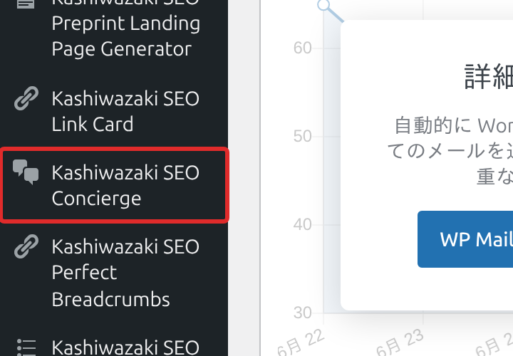
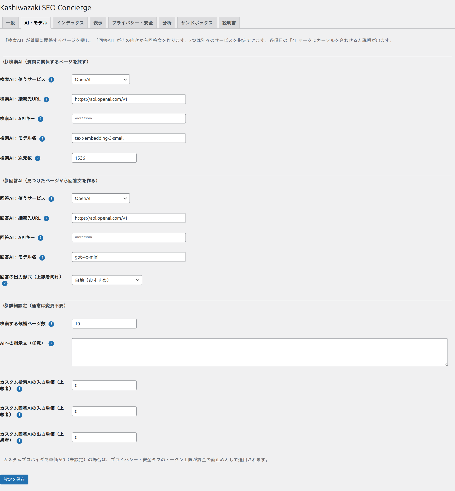
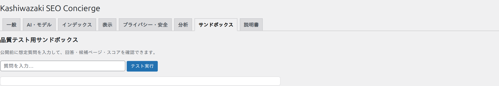
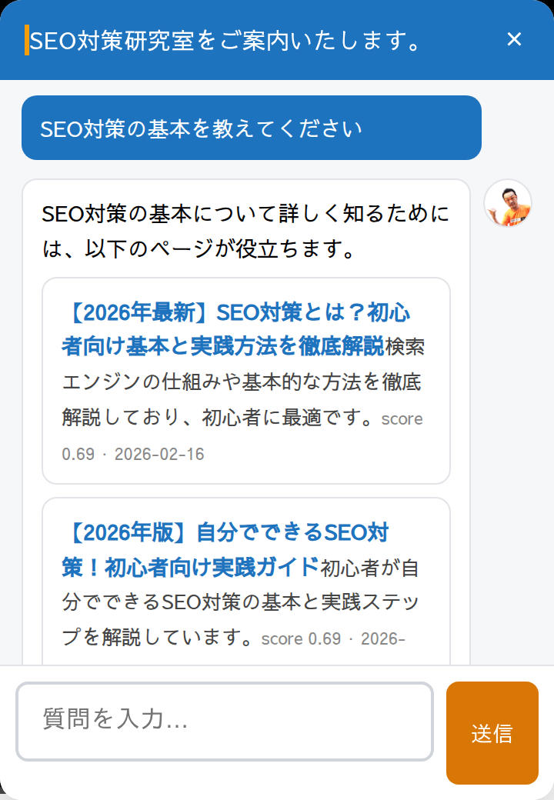

インストール・初期設定
ここでは、インストールから公開までを順番に解説します。このページのとおりに上から進めれば、初めての方でもチャットを公開できます。
はじめる前のチェックリスト
つまずきを防ぐため、先に次を確認しましょう。
必要なもの
- ☐ WordPress 6.0 以上（「ダッシュボード > 更新」で確認できます）
- ☐ PHP 8.0 以上（「ツール > サイトヘルス > 情報 > サーバー」で確認できます）
- ☐ AIサービスのアカウント（例: OpenAI）と、支払い設定（課金の有効化）
- ☐ そのサービスで発行したAPIキー（次の手順で取得します）
- ☐ サイトにサイトマップがあること（多くのサイトは
/wp-sitemap.xmlが自動生成されています）
ステップ1：プラグインをインストール・有効化
プラグインのフォルダを /wp-content/plugins/ にアップロードします（または「プラグイン > 新規追加 > プラグインのアップロード」からZIPを追加）。
「プラグイン」一覧で Kashiwazaki SEO Concierge を「有効化」します。
左メニューに「Kashiwazaki SEO Concierge」が追加されます。クリックして設定画面を開きます。

ステップ2：APIキーを取得する
AIを使うには「APIキー（合鍵）」が必要です。ここでは一番標準的な OpenAI を例に、流れを説明します（他社でも考え方は同じです）。
アカウントを作る：OpenAI の API プラットフォーム（platform.openai.com）にアクセスし、アカウントを作成・ログインします。
支払いを設定する：「Billing（支払い）」でクレジットカードを登録し、利用を有効化します。これをしないとAPIが使えません。
APIキーを発行する：「API keys」のページで「Create new secret key」を押し、表示された sk- で始まる文字列をコピーします。この画面を閉じると二度と表示されないので、必ずこの場でコピーしてください。
APIキーの取り扱い注意
APIキーは「合鍵」です。他人に渡したり、公開ページ・スクリーンショットに写したりしないでください。このプラグインはキーを暗号化して保存し、フロント（訪問者側）には絶対に出しません。万一漏れたら、サービス側でそのキーを無効化（Revoke）して作り直してください。
ステップ3：検索AIと回答AIを設定する
設定画面の「AI・モデル」タブを開きます。①検索AI と ②回答AI を設定します。迷ったら両方とも OpenAI がおすすめです（理由とコストはAI・モデル設定で解説）。
①検索AI：使うサービス＝OpenAI、モデル名＝text-embedding-3-small、APIキー＝先ほどコピーしたキー、を入力。
②回答AI：使うサービス＝OpenAI、モデル名＝gpt-4o-mini、APIキー＝同じキー、を入力。
「設定を保存」を押します。

GLM（Z.AI）や Ollama Cloud は「回答AI」専用で、「検索AI（埋め込み）」には使えません。検索AIは OpenAI などの埋め込み対応サービスを選んでください。詳しくはAI・モデル設定の比較表を参照。
ステップ4：索引（インデックス）を作る
「インデックス」タブを開き、サイトマップのURL（通常 https://あなたのサイト/wp-sitemap.xml）を確認して、「今すぐ再構築」を押します。ページ数に応じて少し時間がかかります。完了するとページ数が表示されます。

タグやカテゴリーのページなど、案内に不要なページは「除外ルール」で外せます（例: /tag/ や /category/ を1行ずつ）。詳しくはインデックスを参照。
ステップ5：公開前にサンドボックスでテストする
いきなり公開せず、まず「サンドボックス」タブで動作を確認しましょう。これが「公開前の安全確認」です。
想定される質問（例:「料金は？」「〇〇について教えて」）を入力して「テスト実行」。
回答文・案内される候補ページ・関連スコアが表示されます。意図したページが案内されるか確認します。

うまく案内されないときは、(1) 索引が作成済みか、(2) 除外しすぎていないか、(3) そもそも該当ページがサイトに存在するか、を確認しましょう。詳しくはトラブル・FAQへ。
ステップ6：公開して見た目を整える
サイトを開くと、右下にチャットボタンが出ます。クリックして質問してみましょう。問題なければ公開完了です。ボタンの文言・チャットのタイトル・回答アイコン画像・色・最初のあいさつなどは「表示」タブで自由に変更できます（詳しくは表示カスタマイズ）。
